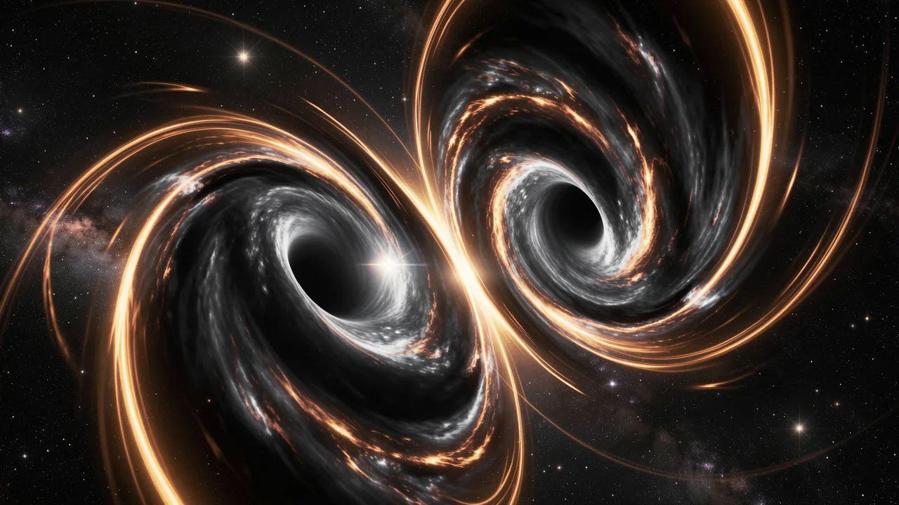

El truco mágico de las tres masas solares
Cuando dos agujeros negros colisionaron, una gran parte de su masa desapareció, transformándose en ondas de energía pura que, en realidad, podemos percibir.

- Two black holes merged, leaving behind a single black hole.
- Three solar masses were converted directly into gravitational energy.
- Gravitational waves allow us to 'hear' cosmic events invisible to light.
- The event confirms the power of Einstein's mass-energy equivalence.
Imagínate que estás sentado en una habitación muy tranquila y muy lujosa en Luisiana. Es el año 2015 y estás mirando fijamente una pantalla que solo muestra estática y silencio. De repente, los sensores se activan. No es un camión que pasa, ni es un pequeño terremoto. Es un minúsculo temblor microscópico que se propaga a través del tejido mismo de la realidad, originándose en un lugar tan lejano que incluso la luz tardaría mil millones de años en llegar hasta nosotros. No fue un fallo en la matriz; fue el sonido del universo desmoronándose.

El misterioso fenómeno de la desaparición cósmica
En febrero de 2016, la colaboración LIGO hizo un anuncio sorprendente. Informaron que dos enormes agujeros negros, uno con una masa aproximadamente 36 veces mayor que la de nuestro Sol y el otro con una masa 29 veces mayor, habían decidido fusionarse. Normalmente, cuando dos objetos se fusionan, se espera que la suma de sus partes sea igual al objeto resultante. Si se fusionan dos objetos de 1 libra de peso, se obtiene un objeto de 2 libras, a menos que se trate de un físico con motivos ocultos.
Pero en esta colisión cósmica, ocurrió algo extraño. El agujero negro resultante solo tenía una masa de 6 a 2 veces la masa solar. ¿A dónde fueron las 3 masas solares restantes? No desaparecieron simplemente por la puerta trasera ni se escondieron en un paraíso fiscal cósmico. Se convirtieron en energía pura gracias a la famosa ecuación de Einstein. La fórmula E = mc², propagándose hacia el exterior en forma de ondas gravitacionales.
La fusión liberó una cantidad de energía equivalente a la de tres soles enteros en un único y fugaz instante.
Eso equivale a la masa de tres soles enteros transformada en una onda en el espacio-tiempo. Para que se hagan una idea, es más energía de la que se libera en una fracción de segundo que la que emiten todas las estrellas del universo observable durante toda su existencia. En comparación con eso, una supernova parece un simple petardo.

Ondas, no solo partículas
Esto nos lleva a la gran pregunta: ¿demuestra esto la dualidad onda-partícula? Si recuerdas haber asistido a alguna clase de física en la escuela secundaria, seguro que recuerdas el concepto, que resultaba difícil de comprender, de que la luz puede comportarse como una onda (moviéndose a través del espacio) y como una partícula (un paquete discreto de energía llamado fotón). Es la máxima «crisis de identidad» del mundo subatómico.
Cuando hablamos de... ondas gravitacionalesEstamos hablando de la expansión y contracción del espacio mismo. Se trata de una onda en el sentido más literal: una perturbación que se propaga a través de un medio (aunque el «medio» aquí es el espacio-tiempo, lo cual plantea un problema filosófico considerable).
¿Y qué importancia tiene para tu cerebro?
Entonces, ¿es esta una prueba de la dualidad? Es complicado. Si bien la detección confirma que la gravedad se propaga en forma de onda, el aspecto de «partícula» de la ecuación, el hipotético «gravitón», sigue siendo el elemento más esquivo para la comunidad científica. Podemos observar la onda, pero aún no hemos logrado «capturar» la partícula. Básicamente, estamos observando las ondulaciones en un estanque, pero no hemos visto realmente una sola gota de agua moverse de forma independiente.
¿Por qué debería importarte? Porque esto no se limita a que los agujeros negros sean espectaculares. Comprender estas ondulaciones nos permite utilizar el universo como un laboratorio. Estamos pasando de la era de «observar» el universo con la luz a «escuchar» el universo con la gravedad. Es la diferencia entre ver una película muda y asistir a un concierto de heavy metal.
detectando ondas gravitacionales nos permite observar fenómenos que son completamente invisibles para los telescopios convencionales. Es un nuevo sentido para la humanidad. Por fin estamos afinando nuestros sentidos para percibir el tenue retumbo de baja frecuencia del cosmos, aunque todavía no podemos explicar del todo por qué al universo le gusta arrojar la masa equivalente a tres soles a la basura en medio de una colisión.
La próxima vez que sientas que tu vida es un poco inestable, recuerda: al menos no eres un agujero negro que pierde tres masas solares de su propia existencia en una onda cósmica.
Responde al cuestionario complementario de esta historia y comprueba tus resultados.
Responde al cuestionario.Cree una cuenta gratuita de DeepSage para guardar artículos, hacer un seguimiento de los resultados de los cuestionarios y recibir el resumen diario antes que nadie.
También podría interesarle.